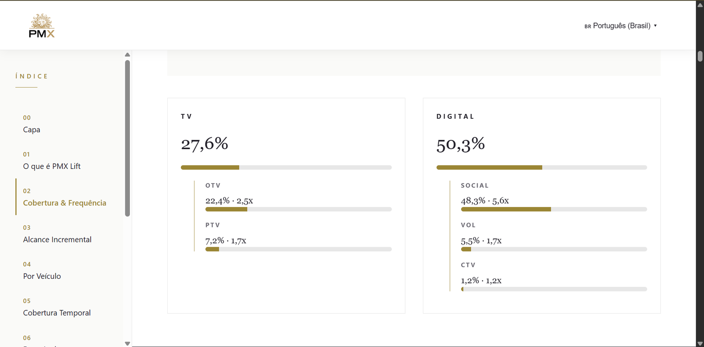
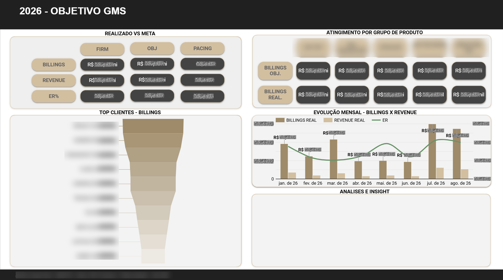

Dimensão
Impacto gerado
Como ajudo
Problemas que ajudo a resolver
Dados dispersos
Transformo múltiplas fontes em uma visão única para tomada de decisão.
Processos manuais
Reduzo esforço operacional através de automações e padronizações.
Mensuração e performance
Estruturo indicadores para acompanhar resultados com confiança.
Inteligência Artificial aplicada
Utilizo IA para acelerar análises e aumentar produtividade.
Meu trabalho
Principais projetos

PMX Lift Analytics Experience
Transformar estudos de mensuração PMX Lift, antes presos a apresentações estáticas, em uma experiência analítica navegável e acessível.
Concebi e desenvolvi um produto analítico proprietário: dashboard interativo com storytelling visual, navegação por seções, visualizações avançadas e suporte multilíngue.
Padronização da apresentação dos estudos e comunicação simplificada do valor da mensuração para grandes clientes — elevando a entrega de relatório para produto.

Cockpit GMS
Consolidar diferentes operações comerciais que utilizavam bases independentes.
Automação das regras de negócio e construção de dashboard executivo consolidado.
Eliminação de processos manuais recorrentes e criação de uma única fonte de verdade para a liderança.
KitKat Journey Audit
Identificar quedas de conversão durante o processo de cadastro da campanha.
Análise detalhada da jornada digital e validação da implementação de rastreamento.
Identificação de erro técnico que impactava a leitura dos indicadores da campanha.
Como eu trabalho
Como transformo dados em decisões
Entendimento do problema
Compreensão das necessidades do negócio e definição dos objetivos.
Estruturação dos dados
Validação, organização e padronização das fontes.
Automação
Redução de tarefas manuais através de processos escaláveis.
Visualização
Construção de dashboards e ferramentas de acompanhamento.
Tomada de decisão
Transformação de informações em recomendações acionáveis.
Diferencial
Inteligência Artificial aplicada ao meu trabalho
Acelero processos analíticos utilizando Inteligência Artificial — não como protagonista, mas como ferramenta para ganhar tempo e dedicar mais energia à geração de valor para o negócio.
- Documentação de regras de negócio
- Criação de assistentes especializados
- Validação de lógicas complexas
- Estruturação de análises recorrentes
- Apoio à automação operacional
Experiência profissional
Onde já apliquei isso
Analista de BI Pleno
Publicis Groupe
Entrego soluções analíticas para monitoramento de campanhas, geração de insights e apoio à tomada de decisão de equipes de mídia e negócio, com foco em mensuração cross-media e redução de esforço operacional através de automação.
Analista de BI Júnior
WPP Media Services
Reduzi esforço operacional através de automação de dashboards para campanhas multi-canal (Google Ads, Meta Ads, Amazon), gerando insights para otimização de budget e ROI.
Analista de Mídias Sociais
Culture Produtora
Gerei insights para tomada de decisão em campanhas digitais através de acompanhamento estruturado de métricas de performance.
Minha trajetória
De outra área da saúde para dados
Minha carreira começou na área da saúde, onde desenvolvi atenção a detalhes, organização de processos e comunicação com diferentes perfis de pessoas. Com o tempo, descobri uma forte afinidade com tecnologia, marketing e análise de dados, iniciando uma transição profissional que me levou ao universo de Business Intelligence. Hoje atuo na Publicis Groupe, desenvolvendo soluções analíticas que transformam dados de mídia em decisões de negócio.
Como eu trabalho
Ferramentas & competências
Dados & Analytics
- Looker Studio
- BigQuery
- SQL
- Google Analytics
Automação
- Python
- APIs
- ETL
- Data Pipelines
IA Aplicada
- Microsoft Copilot
- Claude
- Prompt Engineering
- AI Agents
Mídia & Mensuração
- Meta Ads
- Google Ads
- DV360
- CM360
Vamos conversar
Contato
Acredito que dados só têm valor quando ajudam pessoas a tomar melhores decisões. Meu trabalho é transformar informação em clareza, processos em automação e análises em impacto.